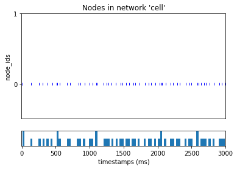
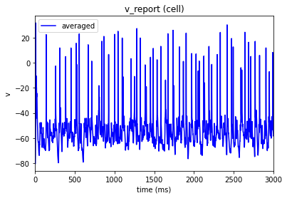

Step 1. Build the cell#
Here we just have to specify the name of the hoc-template and the morphology, files which should be found in components/templates/ and components/morphologies, respectively.
In this model, the dynamic params are built into the .hoc files so there is no need to specify a dynamics_params attribute. Similarly there is no need for axon post-processing in these models so we no longer have a model_processing attribute.
The other attributes are optional and can be removed or used for the Hay model specifically.
[1]:
from bmtk.builder.networks import NetworkBuilder
net = NetworkBuilder('cell')
net.add_nodes(
N=1,
model_type='biophysical',
model_template='hoc:L5PCtemplate.hoc',
morphology='cell3.asc',
# optional
# ei_type='exc',
# model_name='Scnn1a',
# species='mouse',
# location='VISp',
# layer='L4'
)
net.build()
net.save(output_dir='network')
WARNING:root:No edges have been made for this network, skipping saving of edges file.
Next, we can add synaptic inputs like we did in the workshop. Note that some properties like target_sections and syn_weight can and should be adjusted according to the target model type.
[2]:
virt_exc = NetworkBuilder('virt_exc')
virt_exc.add_nodes(
N=20,
model_type='virtual',
ei_type='exc'
)
conns = virt_exc.add_edges(
source=virt_exc.nodes(),
target=net.nodes(),
connection_rule=12,
model_template='Exp2Syn',
dynamics_params='AMPA_ExcToExc.json',
distance_range=[0.0, 1.0e20],
target_sections=['soma', 'basal', 'apical'],
delay=2.0,
syn_weight=0.01
)
virt_exc.build()
virt_exc.save(output_dir='network')
Step 2: Running the model#
To create a cell object from the L5PCtemplate.hoc, we need some specialized code to load in the NEURON template. To do that, we create a special function called loadHayModel that includes customized Python instructions for initializing and building our cell.
We use the custom Python decorator @bionet.cell_model to tell BMTK that whenever a cell has model_template=hoc:L5PCtemplate.hoc”, it should call the loadHayModel function, which will build the cell and return it as a HOC object. We can also use the cell_model template for loading other models, if necessary.
[1]:
from bmtk.simulator import bionet
from neuron import h
h.load_file("import3d.hoc")
@bionet.cell_model(directive='hoc:L5PCtemplate.hoc', model_type='biophysical')
def loadHayModel(cell, template_name, dynamics_params):
morphology_file = cell['morphology']
hobj = h.L5PCtemplate(str(morphology_file))
return hobj
After that the simulation can be ran like normal
[ ]:
from bmtk.simulator import bionet
bionet.reset()
# conf = bionet.Config.from_json('config.iclamp.json')
conf = bionet.Config.from_json('config.with_syns.json')
conf.build_env()
net = bionet.BioNetwork.from_config(conf)
sim = bionet.BioSimulator.from_config(conf, network=net)
sim.run()
2024-04-29 11:29:02,857 [INFO] Created log file
NEURON: Import3d_Section : a template cannot be redefined
in import3d/import3d_sec.hoc near line 1
begintemplate Import3d_Section
^
xopen("import3d/i...")
xopen("import3d.hoc")
execute1("{xopen("im...")
load_file("/local1/wo...")
NEURON: Im is not a MECHANISM
in L5PCbiophys4.hoc near line 22
insert Im
^
xopen("L5PCbiophy...")
NEURON mechanisms not found in ./components/mechanisms.
execute1("{xopen("L5...")
load_file("L5PCbiophy...")
2024-04-29 11:29:03,148 [INFO] Building cells.
Like with the Allen Institute model, the Hay NEURON model will record variables like spikes, membrane traces, and other parameters that BMTK will instruct it to. The output is in the same format, and thus, we can read it like with the models we used in the workshop.
[11]:
from bmtk.analyzer.spike_trains import plot_raster
from bmtk.analyzer.compartment import plot_traces
_ = plot_raster(config_file='config.with_syns.json')
_ = plot_traces(config_file='config.with_syns.json', report_name='v_report')


[ ]: